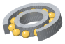
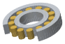
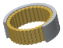
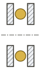
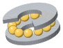
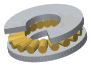
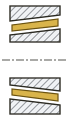
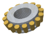

Cojinetes
Son unas piezas cilíndricas que se colocan entre el apoyo de la máquina y el eje o árbol de transmisión del movimiento. El uso de cojinetes se debe a tres razones:
- Cuando una pieza se mueve respecto de otra, se produce rozamiento y, por tanto, desgaste. A medio y largo plazo, este proceso origina holguras que tienen como resultado vibraciones y pérdidas de potencia en la máquina.
- En algunos casos, los ejes o árboles suelen estar fabricados del mismo material que el soporte. Este material puede tener coeficientes de rozamiento altos que originan fricciones y pérdidas de potencia.
- Si no se colocasen cojinetes se desgastarían los soportes, con lo que su recambio resultaría más caro que la sustitución de los cojinetes.
Para evitar todo esto, se colocan cojinetes ajustados a presión (unión forzada) en el soporte. Los árboles y ejes giran libremente sobre los cojinetes.
Existen dos tipos de cojinetes: de fricción y rodamientos:
Cojinetes de fricción
Son cilindros huecos por cuyo interior pasa el árbol o eje. Trabajan a fricción. Se suelen fabricar en dos piezas para facilitar su montaje y recambio.
Deben cumplir las siguientes características:
- Ser de un material más blando que el del árbol, para que se desgaste primero y lo proteja. En todos los casos será más económica la sustitución de un cojinete que la de un eje o árbol.
- Tener un bajo coeficiente de fricción con el material del eje para evitar el rozamiento en la medida de lo posible.
- Ser autolubricantes, es decir, no necesitar lubricación; para ello, después de su fabricación se empapan en grasa para estar permanentemente lubricados.
- Ser fácilmente desmontables para sustituirlos cuando han sufrido desgaste.
Este tipo de cojinetes se suele utilizar en máquinas que van a girar a pocas revoluciones y de poca potencia (pequeños electrodomésticos, juguetes, etc.)
Rodamientos
Son cojinetes formados por dos cilindros concéntricos, uno fijo al soporte y otro al eje o árbol. Entre ambos cilindros se intercala una corona de bolas o rodillos, que podrán girar libremente: de esta manera se producen menores pérdidas de energía que en el caso de los cojinetes de fricción.
Las medidas de los rodamientos están normalizadas para poder encontrar uno idéntico en caso de que haya que cambiarlo. Las bolas o rodillos suelen fabricarse de acero, por lo que son mucho más resistentes que los cojinetes de fricción, aunque también más costosos.
Las pistas sobre las que ruedan las bolas o rodillos deben tener un acabado muy fino y mantenerse engrasadas para facilitar la rodadura y aminorar el desgaste.
Atendiendo al tipo de esfuerzo a que pueden estar sometidos. los rodamientos se clasifican en radiales, axiales y mixtos. En la siguiente tabla tienes un resumen de sus características más importantes:
| Tipo y símbolo | Características | De bolas | De rodillos | De agujas |
|---|---|---|---|---|
| Radial | Resisten muy bien los esfuerzos radiales (en la dirección del radio). Se usan en bicicletas, motores y cajas de cambios. |  |  |  |
| Axial  | Soportan muy bien los esfuerzos en la dirección del eje. Los más utilizados son los de bolas y los de rodillos. |  |  | — |
| Mixto  | Soportan a la vez esfuerzos radiales y axiales; para ello suelen tener las pistas en forma de cono. Los más utilizados son los de rodillos cónicos. | — |  | — |
Clasifica
Coloca cada caso en su grupo. Para los rodamientos, la pregunta es siempre la misma: ¿el esfuerzo va en el sentido del radio, a lo largo del eje o en las dos direcciones a la vez? Y no todo cojinete es un rodamiento.